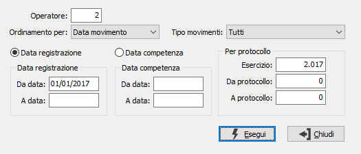

Lista movimenti
Il programma consente di produrre report di stampa relativi alla prima nota di contabilità analitica.

OPERATORE: indica se stampare solo i movimenti relativi all’utente corrente oppure tutti.
TIPO ORDINAMENTO: determina l'ordinamento di stampa: per data del movimento, per data di competenza oppure per numero protocollo del movimento.
TIPO MOVIMENTI: determina quali movimenti stampare: tutti, solo contabili, solo extracontabili.
è possibile utilizzare come filtro la data di registrazione oppure la data di competenza e specificare il relativo periodo di analisi; è possibile indicare l'esercizio ed un range di movimenti per numero.